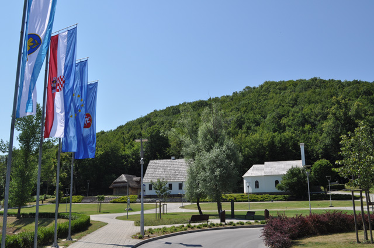

Nikola Tesla (1856-1943) was a scientist and inventor born in Smiljan, Croatia.
 His father (Milutin) was an Orthodox priest, and his mother (Georgina, called Duka) had no formal education, but she was very intelligent. His education began in Gospic and then he went to gymnasium in Rakovac near Karlovac.
Tesla attended the Technical University in Vienna and Prague. For a time he worked for the Edison Company in Paris. Shortly after that he went to America. In America, he continued to work for Edison, but soon they realized that they have different opinions, Tesla advocated for the AC and Edison advocated for the DC.